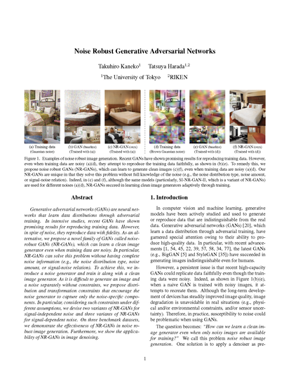

Note: In our previous studies, we have also proposed GAN for label noise and GAN for ambiguous labels. In our follow-up study, we have also proposed GAN for blur, noise, and compression. Please check them from the links below.
| GAN for label noise: Label-noise robust GAN (rGAN) (CVPR 2019) |
| GAN for ambiguous labels: Classifier's posterior GAN (CP-GAN) (BMVC 2019) |
| GAN for blur, noise, and compression: Blur, noise, and compression robust GAN (BNCR-GAN) (CVPR 2021) |
Abstract
Generative adversarial networks (GANs) are neural networks that learn data distributions through adversarial training. In intensive studies, recent GANs have shown promising results for reproducing training images. However, in spite of noise, they reproduce images with fidelity. As an alternative, we propose a novel family of GANs called noise robust GANs (NR-GANs), which can learn a clean image generator even when training images are noisy. In particular, NR-GANs can solve this problem without having complete noise information (e.g., the noise distribution type, noise amount, or signal-noise relationship). To achieve this, we introduce a noise generator and train it along with a clean image generator. However, without any constraints, there is no incentive to generate an image and noise separately. Therefore, we propose distribution and transformation constraints that encourage the noise generator to capture only the noise-specific components. In particular, considering such constraints under different assumptions, we devise two variants of NR-GANs for signal-independent noise and three variants of NR-GANs for signal-dependent noise. On three benchmark datasets, we demonstrate the effectiveness of NR-GANs in noise robust image generation. Furthermore, we show the applicability of NR-GANs in image denoising.
Paper
|  |
[Paper] |
Citation
Takuhiro Kaneko and Tatsuya Harada.
Noise Robust Generative Adversarial Networks.
In CVPR, 2020.
[BibTex]
Code
Video
Examples of generated images
LSUN Bedroom with signal-independent noises
LSUN Bedroom with signal-dependent noises
Acknowledgment
We would like to thank Naoya Fushishita, Takayuki Hara, and Atsuhiro Noguchi for helpful discussions. This work was partially supported by JST CREST Grant Number JPMJCR1403, and partially supported by JSPS KAKENHI Grant Number JP19H01115.
Related work
[1]
A. Bora, E. Price, A. G. Dimakis.
AmbientGAN: Generative Models from Lossy Measurements.
In ICLR, 2018.
[2]
T. Kaneko, Y. Ushiku, T. Harada.
Label-Noise Robust Generative Adversarial Networks.
In CVPR, 2019.
[3]
T. Kaneko, Y. Ushiku, T. Harada.
Class-Distinct and Class-Mutual Image Generation with GANs.
In BMVC, 2019.
[4]
T. Kaneko, T. Harada.
Blur, Noise, and Compression Robust Generative Adversarial Networks.
In CVPR, 2021.